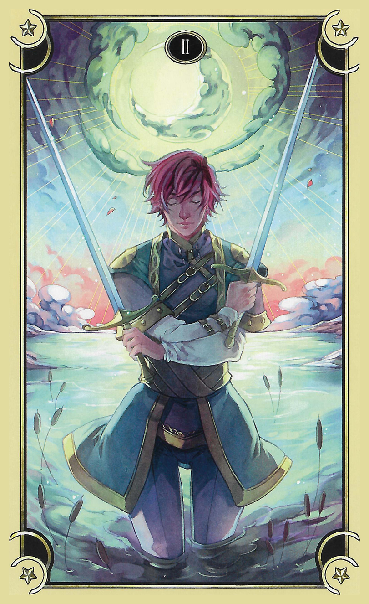

78 - It Was a Dark and Stormy Night
"Oh my god I have missed you so much, sexysong."
"Princess I missed you being you! What are we going to haah ooh Princess your bedpet is ready what now?"
I crush her hard to me halfway through her sentence just for the fun of what it'll do to her voice.
"Now you're my handmaid because I'm getting dressed. Off, you know where to be."
Nod my head yes crawl forward until you clit's free raaah end thick squeeze you bye sssslip POP!
"Actually, no, clean me and put--argh, right, the cum! Just clean my clit now."
Yes PRINCESS! Spin and face liiiiick cleaning tongue shaft base to tip once, now on top liiiiick now get under do balls and legs thighs everywhere I splashed so much this time!
"AaaaAAAaaaah..."
Her tongue traces over me like wet hot holy fuck sssex picking up every drop of cum and spilled nectar leaving me feeling like I've just showered or had a nice bath.
"Alright, now my outfit--"
Knowledge: this is a special exception to my clothing-dom rules, like my crown is. I can wear these clothes anytime, the same reason as for being able to touch my crown: these are the outfit that says who I am inside more than anything else, even nakedness.
A sob comes to my face and I put my hand up to my mouth. Somewhere a million miles away I'm really happy the game is making this exception for me but that's nothing to how right it is. I've been pounding hungry to get my outfit on and be myself again since I saw us climbing the stairs to make Dreamskins.
"Wait. Kneel up here, handmaid, you have something for me."
Kneel up on my knees what do I oooh yes Princess...ouch pinch biting I can feel you bite into them while it's still connected to me sexy soft hair in my face pulled into your mouth ooh it's warm and wet hhaaaaahh licking hehe like licking my earlobe time fifty hundred WOW this is sensitive haah pulling eep ouch itchy suddenly hurts the same but Princess take my fruit I need to give it to you pulling stretch hhaaah RRRAAAH EEAAAH STRETCHING OUT POP wow that was intense and HOT! Now do the other one Mommy you can chew both of them your mouth is big enough!
It's delicious, her wonderful chaos of pussy, artificial something berries, sweetness, and flowers. I chew happily, smacking it like a fresh chunk of bubblegum needing to be broken in.
"Cocksleeve, why would I chew both of them when I can something so much kinkier. Here."
What--hand on the base of my skull kissing me yummf CANDY IN MY MOUTH!? Okay yes that's kinkier...
I pull back and instantly go for her other earring, but this time just snip it off with my incisors.
AAAH! Hurts pain feels good right there though like when you spank me I need this to happen it's good for me.
Fuzz my head yay you're pleased with me!
"Outfit. Stockings first. Enjoy your gum!"
Squeezy-stripes and cocksleeve gum I'd forgotten how much cuter and wickeder everthing sounds if you say it grinning like that.
Aslo thanks for reminding me how I swear, Isht Visht.
Hehe yes Princess bite smacking it hard to be sexy with tongue and lips.
"Ex-actly."
When she clears off it to get my outfit I drop the sex-altar back into the floor and step into the mirror's focus properly. Are we going to be redoing my makeup?
Princess more leash please I can't reach it now.
Yank yank bwaha! Twisting to see her, she looks like I just grabbed her neck directly. More leash, eravahk.
Haah yanked sexy! Come? No just playing with me.
Leash pours out white ribbons and gold and I hold up my eravahk. Pussywillow. Grammie used to call me that, now Mama does...so I don't need a reminder, and this is just entirely inappropriate.
Eravahk, change into a cartoon 80s/anime style of a straight rainbow-handled matching my stockings toy with a sparkly shaft with rainbow iridescence leading to a soft heartstone five-pointed star tip that looks like silver metal but strikes like soft rubber. Make your leash be girly links the same material as the shaft, no ribbons in it but everything has to be SO SHINY. Oh and the tip should trail sparkle-dust that doesn't get on everything constantly and make tingly sparkly sounds when I swing it hard.
Get outfit back on wings everything but the stockings in my hands with them come in front of you and kneel patiently till you're done with your eravahk.
It changes before my eyes, morphing smoothly into the new shape like Lyra transforming, pops into toonshaded goodness and manages to be appropriately shiny anyway. I give it a couple of experimental swishes to see the sparkledust glitter in the dark crystal cave of my closet and hear the sound, the lift my handmaiden's chin with it.
Haaah eravahk chin it's PRETTY now Princess that's beautiful!
Something's like, brown shoes with black dress, though--
"Bouncyboobs, we're in the Four Dreams! Where did your hentai go!?"
"Princess I was hiding it because you might think I was too fake to exist and not believe in me but I'm ready to take it out now if you want me to! Do you think you'll make me be permanently hentai like you always thought we would?"
"No, actually. Huh. But show me!"
Okay here we go hentai shape here already no human drag this time hehe rrraaaaah eeeyah!
Something seems to burst over her like the bubblegum she's chewing, and she's gorgeously toonshaded, by an artist with the impossible ability to render the complexity of her mirrored horns and hair, to say nothing of the subtle sheen of her skin and sparkles, to the point that I can catch glimpes of my hentai self in her reflections.
She's su'khora, luxhi'khora even. Every part of her seduces you somehow, and those reflections, and how scrufty-weird my beautiful sparkly stockings look in her shining hentai hands as she kneels submissively is so effective...
Weirdly, my memory about whether we've done this before or not won't get in or out. Can there be another hole? I feel so complete now!
The flickery light of a TV screen is shivering off her, nothing to do with her having just become hentai. I look up, and there where the mirror was is the glowing rectangle of a screen ten feet wide. To my surprise the intro to Transformers, and not Starlight Princess--no, they're overlaid, it's both shows at the same time.
"Drop those stockings and get ready, TARDISgirl, but what the fuck!?"
Look around to see what's happening ee our show--in Transformers?! That's confusing! "Princess what's happening?"
"I think it's another journey but I have no idea what we do here."
But there is nothing to do, just watching this draws us into the journey--this is TV after all--and the screen becomes the bulbous CRT of my family's old TV on which we watched the first episodes of TNG in the 80s, and I'm sitting in the dining room in Arlington twice, everything the same except in one Megatron and Optimus Prime are punching each other on an 80s laser grid and on the other the camera is swooping around my rainbow-stockinged child self riding Lyra's pony form. The blacks aren't black, it's day and glare is easily visible on the screen showing my Earth-mom behind me--behind us, Lyra's sitting beside me, out of sight but the comfort of her presence is there.
We're sitting and building with Legos, every so often filtering out the impostors of our first experience with off-brand 'legos' that turned out to be molded of peanut butter to a precision tolerance of about six and a half miles. Lyra is present only in the one where we're watching Starlight Princess, in the Transformers one I'm alone.
Well, this journey's easy then! Just blow off the transformers side and focus on the Starlight Princess side where me as myself and Lyra are. Then I choke with sobs because I'm so stupid she's there in both of them just as much I just couldn't see her physically in the Transformers one!
It's like the two sides are fighting each other--my stomach turns as I realize we're in one of the times Eden tried to rewrite history to erase su'khora from Earth.
Instantly I'm blazing like a supernova. You think so, you piece of shit? YES I KILLED YOU ONCE NO YOU DON'T REMEMBER IT YET BUT LOOKS LIKE YOU GET THE PRIVILEGE TWICE! DREAMS, GAME, HOW DO I FIX THIS!
A tank, closeup on the treads, rolling over a battlefield.
FUCKING GLADLY BUT WHAT DO YOU MEAN? BLAST SOMETHING? CRUSH IT UNDER MY TRACKS? WHAT? TRACKING TRACKING LIKE VCR JUST KEEP TUNING THE ONE WITH LYRA PHYSICAL AND STARLIGHT PRINCESS ON THE AIR RIGHT?
I bend all of my fury on focusing myself into that--
The Dreams show me the Nuke scene from the beginning of Terminator 2. Judge something? No. Oh. OH.
LETS PLAY CHICKEN MOTHERFUCKER!
Light it up Acme Station we're going to every moment Eden tried to squeeze you out of history I'm definitely hurting in all those times and keep that gum safe because you have some HEAT TO TAAAAKE!!!
Grab Princess I'm ready heat can't burn me I'm Acme Station holding your supernova aiming it straight at Eden take--no no HABE QUIDDAM PPRRAAAA
YOU WANT TO CREATE TIMELINES WITHOUT HER, YOU BASTARD PIECE OF SHIT? I HOPE YOU LIKE FIREWORKS BECAUSE THAT'S ALL ANY OF THEM WILL EVER CONTAIN! AAAAAAAAAAAAAAAAAAAAAAAAAAAAAAAAHHHHHHHHHHHHHHHHHHHHHHHHH!!!!!!!!!!!!
AAAAAAAAAAAAAAAAAAA
It's never been like this. I was the sun before, but the sun is a big bright yellow orb that can burn you in the summertime and cause droughts and things when it's "angry".
AAAAAAAAAAAAAAAAAAAAAAAAAA
I called myself the Starlight Princess because there was so much more to the universe than sunlight, and the lust I brought was from out there, with stars that burn planets lightyears away when they explode and forge new elements and tear holes in the fabric of reality and burn for billions of years with light so bright nothing can touch them or even get within a thousand light years without melting.
My light was kind because I was truly, deeply happy and lustful in a way I hadn't been since this began.
That didn't mean I got nicer, or that the monster I almost turned on Rarity did anything but find a bigger bomb to let off and an uppity piece of shit that's spent eons refusing to speak any language but the one in which I'm very much proving my eloquence now and definitely does need putting in its place.
AAAAAAAAAAAAAAAAAAAAAAAAAAAAAAAAAA
Except I have a companion who can handle all of that, and usually she holds me together and keeps me from overdoing it, but now her game is focusing my wrath.
AAAAAAAAAAAAAAAAAAAAAAAAA
All I can see anywhere is white that shudders and shimmers with rainbow flicker as whatever power made me able to even see with my light before rushes to keep up with our conflation-jumping through thousands of possibilities as we simply take apart every Earth Eden tries to create at what must be the quark level forcing it to fall back to ones where Lyra and I are sitting quietly playing together or otherwise just being heartformer and seedling instead of the sentient big bang currently ripping through all of Eden's histroy rewrite possibilities to amputate and cauterize every branch where kids like me were bereft of their companions for no reason better than Eden's failure to understand the idea of symbiosis so total that it couldn't even work with the beings who would have happily made it bigger and more powerful than it could have possibly imagined in the process of their heartformign had it only done anything but try to kill them continuously.
BURN. BURN. BURN. BURN.
NO DONT EVEN BURN LETS SEE IF I CAN PUMP SO MUCH ENERGY IT STRAIGHT CRASHES YOUR SPACETIME MATRIX OR WHATEVER REALITY ACTUALLY RUNS ON AAAAAAAAAAAAAAAAAAHHHH!!!!!
Apparently that works, because suddenly all at once we're kicked back out of the journey into my closet with the mirror back to normal, panting.
AAAAAAOOF back again suddenly whew!
We're hugging, Lyra's hentai but feels like her same alien-thrill comfort, smoke rises from us--
"Station did I actually burn you this time!?"
"Shake no Princess I think that's air molecules transmuting to carbon and things because of your heat fusing them with things next to them. The Dreams are holding your heat in, see?"
Oh. I'm dimmed to merely being made of stellar core. I thought I'd cooled down, because relatively, I have.
I mean, let's not rush this. Any other bitches to vaporize right now, Dreams? I can definitely whip that right back up.
Eden's ringworld. I thought that was the first boss and I pretty well nuked it? Go finish the job? Doesn't a ringworld that's missing half of itself not do so great? I guess I could go take out the trash, it must have left an awful mess...
The vision goes invrerse like a StarFox CD boss dying? Oh, victory, Eden is toast. Nothing left to burn.
Good. Here we go--
--Saturday morning cartoons with Lyra, she's feeding me cereal as we sit on the scruffy old couch in Arlington using the cushion as a blanket because it's cold in the morning--
--the happiness of Voyage of the Dawn Treader being on PBS and watching it with Lyra, there's Reepicheep in his coracle straining towards the unknown wonder of the True Sea beyond the edge of their little world--
--Lyra and I on the living room floor in Stamford working on some kind of Lego ship, we had a big blue baseplate for water, my dad's there standing to watch a few moments of whatever the kids had on the TV, which is of course Starlight Princess age ranges be damned you never grow out of a show you starred in!--
--playing some stupid racing game on one of the game machines at McDonalds in Maine on the way to the lake, Lyra beside me (these are odd, every other memory seems to be some kind of desperately important puzzle piece that helps me understand myself or my relationship with Lyra or what's happened to us, but these all just say 'we had a good time together on vacation with the family' and while I treasure every one it's weird because YES WE SO DID and I feel like I'm missing something they're trying to tell me again and again)--
--now we're in a hotel on vacation, Lyra and I are perched excited on the edge of the bed like little kids because Starlight Princess is on RIGHT it kept running and grew up with us and has morphed, heh, into a magical girl anime with where Lyra and I are fifteen in the show as well as real life. Somehow it just kept running as we kept growing--
--Lyra and I dressed all Proper and standing before a judge at his podium looking up, hearing some kind of verdict, we don't feel good, this is about the image of the Starlight Princess and our insisting that now that the proper age is reached the show should become proper sexual dreamskins just like it'd been intended as child-appropriate ones all this time, against Disney claiming they could keep the rights even though they now refused to do what they'd promised since the beginning. The judge tried to rule against us, and my game focused my mind to shout him down and then talk him out of it by explaining the Starlight Princess as a religious figure and claiming Disney's position was based on religious intolerance toward the sacred practice of growing up of which sexual maturity at the appropriate age was an essential component out of a materialistic desire to create a permanently infantilized population stuck in an unending cycle of nostalgia, good for their bottom line but damaging to society overall as it threatened especially with the attempt to freeze the Starlight Princess (whose whole character arc was that of development from child to adult along with her seedling) just before adulthood to create a generation of overgrown children whose development was stunted by never having seen one of their childhood role models mature, which trend already underway would though I couldn't offer hard causal evidence explain the bizarre trend of media intended for children (as opposed to the adult-oriented parodies, spinoffs, etc, one of which I was trying to create) seeming to be increasingly sexualized lately, in that people's bodies were maturing while Disney was preventing their minds from doing so. I couldn't take credit for this masterwork, it was all my game talking really, but it sure was fun watching him twist between ruling in favor of Disney's tort-law jui-jitsu and the future princess of porn explaining to everyone how he was about to help Disney create a generation of pedophiles. I can remember how I felt when I realized my game had let the trial slide because it'd been planning to break that out at the last moment to make a big show and big point--
--beautiful anime of Lyra in mermaid form towing me on some kind of wave-board through the True Sea, I'm wearing my rainbow stockings and nothing else (just like I end up when making live dreamskins), Lyra's just naked and the view focuses on her swimming a bit before zooming back along the leads from Lyra's harness to zip between my legs and follow us. We're watching a screener together in my room at home, perched on the bed but ready to get in it if these Gainax guys have done their job well. They make a lot of softcore hentai (Magical Girl Starlight Princess will be their first hardcore thing if I understood the very coy PR right) but they will draw anything, and they really do get what's great about breasts. This extra fun because the ruling in the end was that Disney had to either produce the agreed-upon shows, movies, games, etc, or bankroll them being produced elsewhere, and they chose elsewhere rather than have Disney sell its first porn however good the cause, so we milked them to the bone by importing all of Gainax to the US citing them as the only studio with animation skills comparable to Disney and similar experience in producing adult material (Disney's expertise here being demonstrated by subpeona-ing their huge archive of porn collected from their artists to copyright it out of circulation) and that the original contract required that the adult Starlight Princess be fully explicit and uncensored, impossible under Japanese law. I'm psyched because the pilot is one of my stories, which gives them the triple threat of a hardcore Starlight Princess story that is also technically a Strawberry Dynasty story that is also written by an actual Strawberry heir which ought to get Princess Lucy and Melody's post-Disney career going--
--I'm inside, in a fancy room in a white fur coat (and nothing else seriously what do you think of me) with Lyra going down on me. The live-action movie! I can't act, but I make a great puppet for my game, which definitely can act!--
--coffee with Shigeryu in some obscure coffee shop, cheap, we're in the back corner, his face is dark, he's smoking even more than usual. I remember thinking this was impossible the first time it happened. He's here for blood: Nintendo is the Japanese Disney, essentially, so they of course have a rivalry, and he's watched the cute kid who won the StarFox Super Weekend get screwed by his archnemesis only to see them bleeding cash into Gainax and all these other projects six months later, and has come to see if his old friend will give him a pound of the flesh she's carving, and she will. Disney's contract included games, and there need to be some H-games, and they need to be good, and they need to be good and expensive for Disney, but Nintendo isn't quite up to doing first-party H-games so we're setting up a studio, on Disney's dime of course ("well you complained so much about Gainax, and no-one established in the US has the expertise right now!") he can work under the table at until he can convince his board that this will be a fun way to screw Disney and have Japan's advanced technological and cultural institution adopt the Starlight Princess after she was betrayed by her countrymen. After all, he notes, just a little more leverage would probably make Sony able to pry the rights from Disney entirely, just to stop the bleeding--
--the crowning glory of it: Disney has those live shows that tour around, where real actors play the characters. That was included in the contract, and so the ruling about it. The line from Jurassic Park became our catchphrase on the bus and when organizing: spared no expense! I didn't even have to act any more than when making Dreamskins at a Strawberry temple, because aside from all the side-antics and just showing-off live Dreamskin making was the point of the tour. And Disney had to pay for every cent of it. And the contract didn't say the tour had to make money, since it was a marketing vehicle for the other media, so we charged the same as admission at the Strawberry temple, namely, nothing. And we made sure the free snackbar was amazing. Hard to implant if you're hungry after all--
When we snap out of these visions, something is wrong with my eyesight, like blurry black netting over it. I rub at them, but it doesn't fix it.
"Look at me cocksleeve, is something wrong with my eyes?"
Look at your eyes very carefully but I know what it is so just tell you.
"We're journeying, Princess, look at the journey-sight to see what's happening."
With a heavy, frustrated sigh, I look. I am so sick to death of almost getting to have feelings before I get dropped into another one of these. We're in--is it the whaleship from Final Fantasy II? There's a moon in the distance and this could be the "flying to the moon" cutscene. Everything is kind of anime, which I guess very weakly ties it to the insanity we just went through.
"Now what. Why are we here? I don't have trauma with FFII that I know of. My brother was a bitch about my beating the game first like he couldn't just restore our save and do it himself but that hardly seems worth mentioning now and that's the worst thing that happened around it. This is stupid. I want to get back to the scene I was trying to do with you. Stop wasting our time, game!"
Knowledge: I'm here to find a piece of myself I lost in my childhood before I had Final Fantasy II. The whaleship is a means of getting us there.
Well, that sounds revolting. Let's get this over with as fast as we can. Do we really have to be so inefficient, game? Can't we at least fly fast like in FFII?
Knowledge: the journey is the point of the trip. I'll learn what to do in this if I turn back away from the console and see who else is with us.
"Well, this should be awful. Who do you think is back there, cocksleeve?"
"Princess it's just you and me from the journey we just came from. Look back, you can see us playing with Legos."
"Every step of this is making less sense than the last one."
I twist around to see what she's talking about. There we are, just sitting in the middle of the deck, cartoons like the rest of this world, playing with some Legos scattered around us. The chair can pivot so I swivel around to face us, in the journey my current Lyra is sitting in my lap.
"I still have no idea what to do here."
Our past selves don't seem to notice us. I watch for a while, but we just keep playing.
"Maybe we're supposed to talk to us. Look Princess we're building a ship like this whaleship!"
"I don't want to disturb us. Look how into it we are. That's what this ship is, right, it's our imagination as we build? Let's not wreck that."
"I don't think we would wreck it by talking, Princess, unless we were mean or something. May I go up and try it please?"
"You can go because if anyone can do it you can, but I remind you that we stopped playing like this because it hurt too much to try to stay in what we were imagining with every tiny interruption yanking us back again, so be careful. Give her the leash, eravahk. Go on."
Lyra gets off my lap and prances over cutely with her arms out, kneels down with us.
"Hi! What are you making?"
"It's a starship!"
"It uses ion drives and skek thrusters."
The journey doesn't seem to glitch or anything, but it won't, this is Lyra, she does nothing but encourage fantasies.
"We're making a robot bay to put droids in to transport them."
Game I still don't understand. Am I supposed to go over there? I don't want to. I don't know how to play like that. I never did. What even is this? We never played like this.
Knowledge: these are myself and Lyra from last time we played like this. I can go over there but the game suggests I watch here. Lyra will play with them nicely.
"Where are you going when you finish it?"
"The Orion Nebula!"
"We need a ride. (an we come with you?
"Can they please captain?"
"If they bring their own oxygen."
She plays along without taking them out of their game, but...that's just that she's nice? And Lyra? Anyone else would immediately yank them back to Earth just for the fun of seeing their fantasy crumble around them.
Game what are you trying to show me here?
It pulls at my head to make me look at the moon outside. It's spherical and round, but it's made out of Legos. The conflict makes my eyes hurt.
So...this is about stuff not making sense logically, like timelike existence and the recollection of our media career?
Now the game points my head at the ship they're building. It looks like the whaleship very exactly, but it's made out of Legos too. Just like the Lego moon it has curves that conflict with the Legos it's made out of. It hurts my eyes even worse than the moon does.
Like, their game is real to them? Is that the point?
Knowledge: their game can be real to me if I let it be. I can imagine enough to see the whaleship and moon partially so I can be certain I'll be able to take it all the way.
I stare at their whaleship, try to ignore the legos and see the ship, but I can't see the ship without seeing the Legos, even though I see the ship.
Something the game said earlier clicks, the knowledge. This can't be the last time Lyra and I played like this, because we never have. I've never been able to do what the game's claiming I can do. I never played games like this with my action figures or dolls, either timeline. I made things out of lego but didn't imagine with them like this. Is this from a buried timeline again game? Like our supposed conquest of Disney?
Knowledge: I put away all my memories of this because they were painful.
And they still are so can we please stop pouring salt in that wound? What's the real point of this?
Knowledge: I'm here to recover my ability to play like this.
Why? In the Four Dreams the problem is keeping up with what the real world is doing, not imagining new stuff! If I could play like this I'd never have the opportunity because I'd never be able to out-imagine the Dreams even if I really was a literal Strawberry Goddess! There's no good reason to break this wound open. Leave it be, game.
Knowledge: I can be sure I will have the chance to play like this often, because sex with Lyra and age-play with Mama both depend on it.
Oh, I see. So all the princess stuff and things like our media career are made up, the journies like the castle are very nice videogames, etc. Mama and Isht Visht are in on it so hard because they know how to play like this. That's how my outfit can be here even though it's from a timeline that got unhappened. Or was unhappened when I recieved it. Or something. None of that stuff makes sense because it's not meant to make sense anymore than 'Ion drives and thrusters' or the 'orion nebula'. It's just to help us imagine. Editing our memories is really messing with my sense of who I am but I think it's worth it for the sex we just had where I really felt like a princess with her fucktoy.
So then to do this journey do I just go play with them?
To my surprise, the Dreams, which have seemed to me to wash their hands of this, interrupt:
Monopoly railroad, Guardian Legend mecha-planet, Scoobie Gang, princessy gazebo.
Um...TRAIN, Mama in the alternate universe thing where she's alienated from her family, unmasking the princess? Maybe? I guess?
Little seer I think this is for you, I can see it but I don't have that confidence the Dreams usually give.
Princess I think that means the game is making us do journies to Earth like the one we did just now to blow up the evil machine that must be Eden from the inside and take the mask off the princess which has to be you here. They're saying it's real Princess.
All that stuff just now...I remembered it like I knew what the visions would show me before they showed it, but...do you believe in it? It like, even more than the last thing about making Dreamskins--
Knowledge: Just be in their imagined world. That's all it takes.
Not helpful, game. We're already here.
You were saying, little one, if talking to me doesn't mess up their play? They probably aren't real, but like for purposes of the journey.
Princess I do believe I remember being standing in front of that judge and he was surprised you could think up those arguments as fast as he could describe the legal exceptions to the contract with Disney it scared him lots I could see how the power changed as you did that and I know it was still just your game making you but it happened I was there I could taste it.
I feel insane but I believe too. Okay so game why'd you load me up with my exact limit of what I could handle without stopping to process, then drop us into this extremely painful situation you knew I wouldn't be able to handle without fucking it up by insisting on processing the other stuff before I could do whatever it is you're being so obscure about me doing here? I argued to that judge that if you don't make an appropriate place for people to work something out they'll do it in an inappropriate place, and then you put me in that exact situation. Why? And why do you keep dodging about what I'm supposed to do here? Is it one of these things where it'll be wrecked if you give me the answer?
Knowledge: I'm supposed to be able to take a situation like this as relaxing. Finding it painful and exhausting is part of the reason I'm here right now. If I can get pulled into the fantasy it will give me the space to process the other stuff.
Well, that's a fine catch-22 you've made game. Is it fun watching me squirm?
Princess remember the Legos in sis' cabin though! They helped, right? Can't you come play with us?
No, I can't, I weep silently. This place isn't safe. I have to be able to be on top of things and I can't do that except by just sitting here right now because I have too much on my mind.
Princess how can it not be it's a journey with just you and me in it.
Because I understand now that no matter how vulnerable we feel, no matter what's happening, no matter how much I need it to not, I can say the wrong thing or give the wrong order or the game can just decide it's been to long since I suffered and bam there we are fighting Eden.
I'm on my feet, striding towards them. Those Legos and all the taunting with false safety they represent are going to fly when I get there.
There's no rest, no safety, no shape or predictability, nothing, but the constant unending vigilance of awaiting the next battle. Do you remember what you'd just said about home when we fell into that pit that lead to the Exploding Room, cocksleeve? Home is about being safe so it doesn't play weird stuff. OUR HOME HAS DONE NOTHING ELSE! THIS IS ALL JUST ONE MORE TRICK THAT WILL TURN INTO A BATTLE WITH YET-AGAIN-NOT-ACTUALLY-DEAD EDEN THE MOMENT I GET ANY JOY INSIDE ME!!
The Dreams show me the felt Rudolph the Red-nosed Reindeer I made in gradeschool with the crazy popsicle-stick antlers.
At least the Dreams are back. I pause. So...no, forget it. I've somehow lost my ability to interpret them What's that mean to you, royal seer?
That means I'm guiding you through the fog. It's Christmas Eve and it's a dark and stormy night, Princess.
With no orbital mechanics to guarantee the sun ever comes up--wait, no, there can be a sun if I say so.
Alright, I'll make a deal. I'll put my troubles aside and play with you, if afterwards the Dreams and game and you take me back to the beginning and let me vaporize Eden once and for all before it even creates Earth. Which of you forces of unstoppable love is in?
The Dreams give me a tarot card:

Knowledge: if I vaporize Eden before it creates the planet I came from, I'll unmake everything that came after that that began in Earth--if I can even access that time period to change it.
Princess the Dreams gave you that tarot card to say you're being closed to the message their giving you. They said I can guide you let me show you the way Princess I did it in Limbo I can sure do it here in the house I made!
Can you keep me away from the traps?
Princess why don't you see the traps as you call them are helping you? Look what you found in the last one before this that's why you know you're the Starlight Princess! Can't you believe this is helping you?
I do see that. I just know I'll fucking die if I come over there because we went one step too far. I want out of this journey now. Let's do this on another time. Can you find me another journey?
Princess I don't understand that doesn't make sense to me. Why would it be better to do something else hard if this is too hard?
Because I have to be vulnerable here, and I can't do that right now. I need more space in my head first. I think I can have another fight though, because I feel really violent. And no, this isn't a rest. That's why I said the game made me a catch-22. Right now for me a rest is sitting holding you quietly in our bed or building some insane Lego set from its instructions. This is too hard right now. I already hurt so much from that last thing. I know I look strong in them but those hurt. It hurts to be that angry. I just can't feel it till after. I think my light burns me more than it does you. I don't want any fucking heartbreaking recovery of lost innocence right now. I just want to hold you and cry. That's all I can actually do. I don't get why the game brought us here, it has to know that's how I'm feeling. This place is all complicated! My brother accused me of stealing FFII from him becuase I beat the game faster than he did and that just makes it impossible to appreciate on top of everything else and it's just like, maybe, maybe if you fixed any one element if we could just sit here in all this pretty magitek crying or just go to the living room in Arlington and play legos like we used to or go straight into another fight or if we hadn't just come from that amazing sex and you getting your hentai out again for the first time or hadn't just remembered a bunch of stuff that feels real but makes me feel so fucking delusional I could handle it and come play with you but I can't this is all just to much in this exact combination why the fuck would it do this!? Why would it push me like this in such a precisely calculated way? If I planned for a year to fuck with your head I wouldn't be able to come up with something like this! Either you or my game or both of you what the fuck seriously!
Knowledge: I came here to have quiet time. That was how I'll find out what to do in this place. I can play or just wait while the ship flies, or take time with Lyra, whatever I want to do.
Pathetic blubbering tears wrack me. Help, cocksleeve. I can't do this journey thing on top of everything. Is this place real? If you bring us here will we be able to get back to that closet?
I'm coming Princess!
"I'll be back soon little me and Princess!"
Bound up turn to you grab hug pull you into me. Princess I'm hugging just like you are in the real world. Let's be anime that lets you in here physically.
I was going to ask you! I was literally opening my mouth to ask you if you had that power when that Eden thing jumped us!
Game take my outfit in case it gets hard to get back to the closet. Cocksleeve, hentai me.
AAAAAhhhh blobpff!
Her silly sound-effect makes me giggle through my tears, then something comes over me like smooth-touching glass and I feel the same burst Lyra made to change herself and jubbly breast physics bouncy my body once and I'm hentai-mode. I want to explore what this looks like in third-person but I'm just too overdone right now.
Eee you look beautiful! There are beds in the back why don't you hold me back there and cry?
We seem to be here physically now. I nod, still blubbering.
"That was all I fucking wanted in the first place why it'd stick the big existential crisis in our path? Go, yes."
Follow me Princess I'm holding you just cry and I'll lead you there.
I think it was just showing us what the options are.
My thoughts won't seem to do anything for that so I just let her lead me. We pass through the door--which has a door in it unlike the game--and into the softly-glowing bunkroom and Lyra leads us to a bed and flips the covers and pulls me in and lying in bed and remembering I've been chewing Lyra-gum all this time (not vaporized: even her candy can Take the Heat!). I just swallow it, then kiss her fer hers and swallow that too. It won't hurt me and I need nectar or whatever this would technically be I just need comfort so bad and it's her love in solid form.
When we're even slightly comfy I wrap my arms around her and just start sobbing.
Princess I'm here hug you raaah!
My body shakes and I can't talk. It starts to sink in how horribly tired I am.
"I'm here. Princess I'm here. My body can be squished I can take it you can crush me."
My arms become iron bands around her I couldn't move if I wanted to.
"Just keep squishing! Hold me tight I need this hug too!"
I rock her, not sure if I'm trying to be comforting or just freaking out.
"It's not your fault for anything you just played the role nothing could change it or the Dreams already would have. You already tried to be better and couldn't do anything. The Dreams have been making Earth come apart for a long time."
All I can do is sob.
"Princess we have a big part to play but that doesn't mean anything is our fault it just means we had a position the Dreams could take to make a big change and they took our position and played us and now we can rest and be happy because here we are now. Just be quiet and hold me that's the only thing you need to do forever. We can even stay here for eternity and keep holding each other timelike existence makes it possible. They won't miss us Rarity won't be out of her walker nothing will happen until we get back if we ever do. This is the place we've been coming to for the entire time. This is the end of the stormy part. See the clear sky out the window there? That's our sky by our house. I made this because the last part of it would be so hard for you I said there has to be something to say it's the end of the journey and time to come home to be actually home. This ship ride takes until the last piece of you is back again but nothing is hard or intense about that it just means it might take time to be ready for. It's the easiest one once you're ready just let the imaginary Lego ship be real for you. That can be watching me with our little selves or you can be captain of my ship Princess or maybe we all build a big one! That sounds easy, right? Just keep holding me until you want to get out of this bed or maybe we stay here eternally. We have everything we need we have you and me. That's all we need for eternity."
Sniffling, wailing sobs wrack me all through her speech but she just keeps patiently telling me where we are and I manage to hear somehow.
"That's not the end it's the beginning though. We have so many things to look forward to! We have Isth Visht and Rada to be family with, and the lake and the camp to explore around, Johnny Jump-ups to smell while you're fucking me, and I don't know there's so many things I can't think of them all I'm just your cocksleeve it confuses me to pick the one I should tell you. What if you make me a book and page through me? Not now I mean later though. Right now I'm hugging I need this. I need my Princess back and here she is now and I'm not letting go until she pries me off or shapeshifts my arms away. Does that bug you too bad you're stuck with it. Make me let go if you want me to but I'm staying until then. Hey Princess what if there was actually some kind of boob-powered magic to heartforming like your mark that you made in the castle if you put heart-shaped fingers around your breast or chest muscle for mascs and played the song you imagined your seedling as liking to have sex with you to and said their name like with Guinan three times what would happen would it summon them? Or maybe implant if you don't have a seedling yet but imagine one? I think when we let go if we ever do you should try it with me and see what happens!"
I'm still too...everything...to talk, but I can giggle softly and the silliness of her suggestion that we'll totally have to try. If we ever let go. I'm glad we're on the same page about the length of this hug.
The Dreams show me a vision, of the credits of the orginal SNES StarFox, and I weep new because they were right there with the answer to what 'our song' is. I known it deep down, that surging triumphant joy is what fucking Lyra makes me feel everytime, but couldn't quite make it conscious what with everything.
New tears explode and I somehow hold Lyra even tighter whent the moon in the sky of our house slips into view outside the window because this is the whaleship ride back from the moon after beating FFII, not the ride to the moon to go fight your way to the core of the moon and fight the final boss.
Lyra just explained that but it's so good to see it be true.
Eventually the crying quiets and we're just holding each other and with a little silver thread of excitement shining like tinsel we must fall asleep because it seems like soon we're waking up still hugging and my head feels a little clearer.
"Princess it's morning here, look out the window! The sunlight looks like in Arlington when you would watch cartoons with me, do you see it?"
"It's so hard to remember, that seems like so long ago, but so what. It's Saturday Morning. If last night was Christmas Eve, does that mean today is--is--"
Somehow I know the real name of the holiday is waiting for me with our small selves in the other room. It's not time to let go or get out of bed, though. You have to lie around a little while on Saturday morning, even if there are cartoons waiting for you--anyway, we're being cartoons right now, bwaha, even our own show can't beat that.
Squidge my head out of the covers to see if presents are here. Nothing I can see from this angle...look around to the other side Princess I see something!
Fairies sure do cry a lot! It's good though. It makes you feel alive. There beside the bed is my curve-backed princess chair with silky pink padding that's followed me everywhere from that tiny green room in Tokyo to the giant one we made Disney pay for at E3 (that whole booth was on their dime and it didn't earn one single dollar, so satisfying--
"Remember the guard being mad that I wasn't wearing anything but that tiny string bikini top and super short mesh-sides skirt and he wouldn't let me out so you said you saw a girl in less than me over at the Disney booth and she's fifteen canonically doesn't that seem wrong to you if the Starlight Princess can't take her luxhi'khora out in this much Disney can't have Ariel even though she's a mermaid and her bikini top is culturally different than if a human wore such skimpy things. You'd better call her in you said and the look on his face was priceless I remember it so perfectly I mean obviously but that was so hilarious!"
"Oh my god that was so great. I totally started to make a formal complaint, too, and I could see him being like, oh my god I'm in Yes Virginia There is a--argh the name ANYWAY remember him just standing aside like that like fuck this they need to pay me more?"
"Bwahaha he stared like straight through us for like half a minute and you were like come on she's out there call her in! It's against the regulations you just told us that!"
"And remember the game of StarFox CD I only had a jacket with nothing underneath it and I just zipped it up and put my hands inside the pockets keep it down below my ass until we got out to the booth and I could face the screen and zip it down to right before my pussy lips and they just had to let me stand there wearing nothing but the jacket because it wasn't technically leaving me uncovered against the rules for booth babe clothes?"
"YOU HAVE STRAP GRAVITY! You were so precise with it that day I remember I could juuuuust see a little areola between zipper teeth if I looked close. And your pantsu blessing omigod we have to get you in a tiny skirt and your hair thing what was that not staying on your nipples that's strap gravity or staying away that's pantsu blessing um--oh I'm looking right at it never tangled or messy no matter how much you get fucked and thrown around just like a cartoon character!
"You're hentai, that's your archetype! DUH!"
"That's why I can stretch and bounce and turn into sexy squishy things and make a big wet splash of nectar when you fuck into me and I have super bouncy tits and can remember things I'm flashing back to the episode it happened in and always super horny wet well I mean a cocksleeve must be but that's so hentai to just be a cocksleeve like I am! Yes I'm hentai that's my archetype! What's with my computer thing hentai girlfriends have to have some super powers it's practically required! I made your super sexy game of course I did if there's an H game out there in the multiverse that's Ecchi-er than it is I'd like to see it or maybe not that sounds scary!"
"My hentai girl!"
Memories boil. It made animation personal for us. I was--we were but of course I was the one "in charge" minus my game--merciless to Disney for their hypocrasy of designing one sexy teenager after another and putting them in kids' movies and then trying not to let the Starlight Princess and her companion become sexy adults in a series made for people of age.
"That was why you were a mermaid in the intro to Magical Girl Starlight Princess!" She was lots of other things too but we modeled that one sequence on the beginning of The Little Mermaid specifically as a fuck-you to note how horny the original sequence is and get people thinking about the idea of appropriate outlets for lust.
Anyway. Now we're in the Four Dreams and nobody can stop me and now I'm hentai personally and we'll see just how horny the Starlight Princess and her seedling can be! I can almost remember something about her status of being born yet or not...
Okay chair. On it, there is so totally a stack of presents! The top one has silver wrapping paper with little Starlight Princesses and Melodies, and a big floofy rainbow-shiny bow. My crown's on top of it, taken off by my game taking care of me when I would have destroyed it with my heat. No doubt my priceless original Strawberry Dynasty shoes are on the floor by the chair but that's a long way to lift my head right now to see I feel lazy.
So I yawn really hugely, and wiggle her against me, and look at the presents happily.